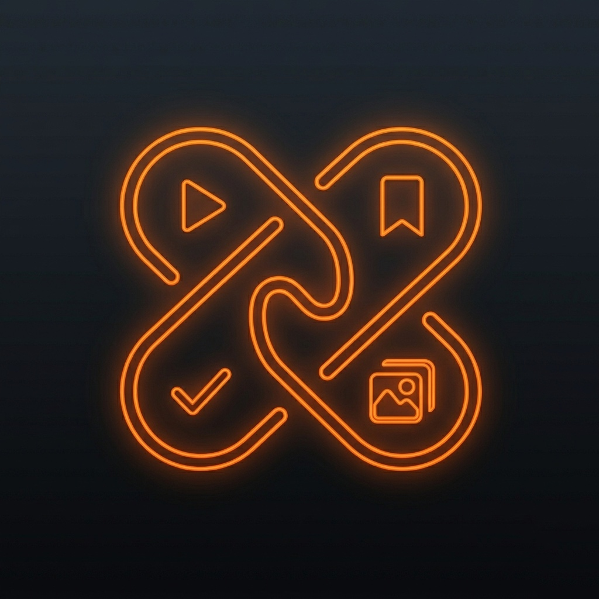
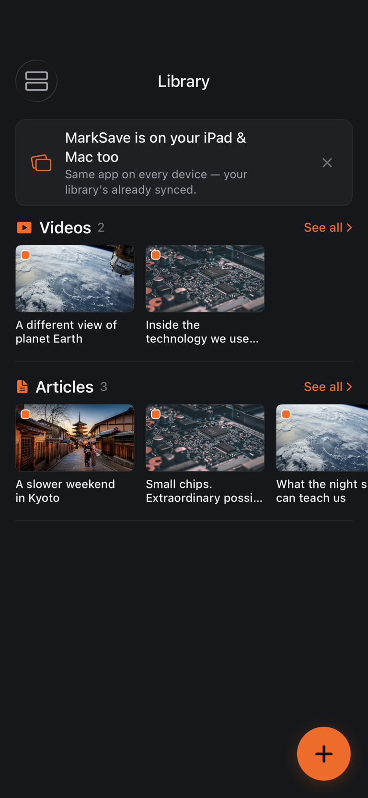
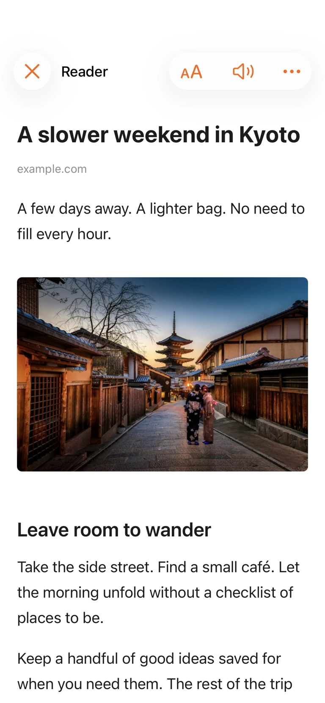
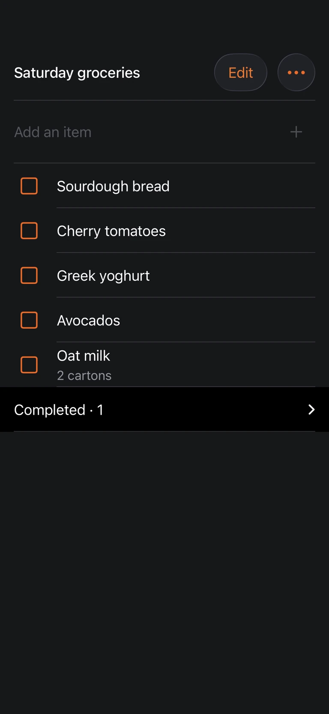
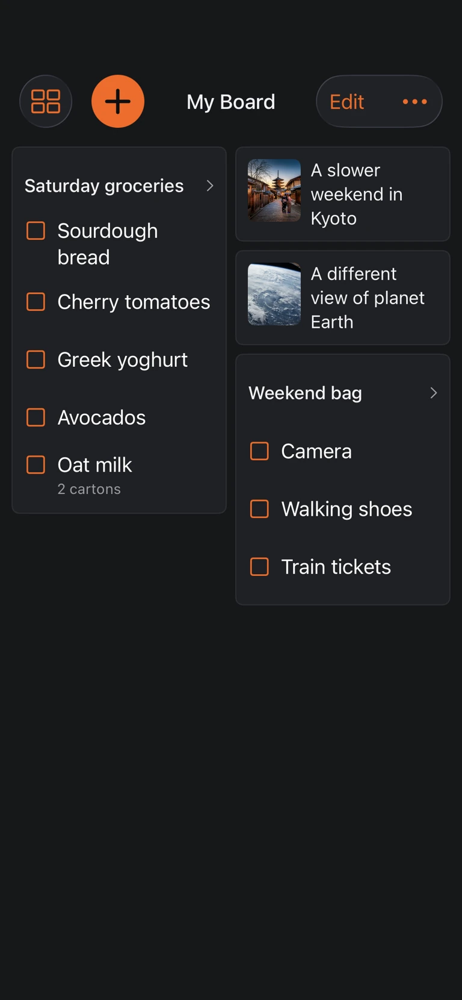

Find something good.
Save a link from Safari or another app using the share sheet. Add your own notes, photos and videos alongside your web finds.

MarkSave.Get MarkSaveYOUR CURIOSITY. WELL KEPT.
The article. The video. The next adventure.
Give them a home you'll actually come back to.
Save articles, videos, social posts and links in a visual library for iPhone, iPad and Mac.
Free to start. No separate account. No ads. Ever.
Meet your new library
Real app screens. Illustrative demo content.
Your library will be a little more you.
01 / FROM FOUND TO FAVOURITE
Less collecting dust. More cooking that recipe, watching that video, and finally reading the thing.
Save a link from Safari or another app using the share sheet. Add your own notes, photos and videos alongside your web finds.
Browse visual shelves by type and source. Make the library your own with shelf order, folders, tags and search.
Continue brings unfinished reading and supported videos and books back into view. Forgotten helps older finds get another chance.
02 / FOR THE READING PART
You came for the article.
Not the obstacle course around it.
Reader gives supported articles a focused, full-screen home. Adjust fonts, text size, spacing and backgrounds. Keep notes close, listen with read-aloud, or save supported articles for offline reading.
Reader and offline reading require Premium. Extraction varies by website; some pages provide only a preview.

03 / MORE THAN A READ-LATER PILE
Keep video links alongside your reading. Play supported videos in MarkSave, with Picture in Picture and background audio where supported.
Personal notes, photos and videos belong here too. With Premium, bring in PDF and ePub books for a library that goes beyond links.
Rediscover related items already in your library. Optional video recommendations live in their own section, separate from your saves.
Use the Continue shelf or widget to return to unfinished content on that device. Your good intentions now have a shortcut.
NEXT UPDATE PREVIEW LISTS + MY BOARD
The groceries to pick up. The bag to pack. The places you want to go. Give the practical stuff a home too.
A look at what we're building next. Lists and My Board are not yet in the public App Store version.
Shopping lists, packing lists, little lists for big plans. Choose checkboxes, bullets or numbers. Suggestions remember items you've added before, and duplicate checks keep the same item from piling up.
Checked items stay in Completed, ready to use again.

Pin the particular list, folder, article or video you want close. Arrange a compact collage or browse shelves, and choose My Board as your landing screen.
Your weekend bag next to your weekend inspiration. Exactly where you want them.

YOUR LIBRARY. YOUR APPLE DEVICES.
A little screen now.
A bigger read later.
MarkSave works on iPhone, iPad and Mac. Keep saves locally, or use Premium to sync supported library content through your private iCloud.
No separate MarkSave login. No ads in the app. Just a place for the things you chose to keep.
iCloud sync uses the same Apple Account. Personal media availability depends on its storage setting and whether the file is on the device.
05 / BEFORE YOU SAVE US A SPOT
Web articles, recipes, travel guides, social posts and video links, plus personal notes and imported photos and videos. Premium also supports PDF and ePub book imports. Playback and article extraction depend on the source.
If you want a read-later library on iPhone, iPad and Mac, MarkSave combines a customizable Reader with visual shelves, videos and personal media. It is built around finding and enjoying what you saved. Try the free tier before choosing Premium.
With Premium, download supported articles before going offline. Saving a link alone does not guarantee its content is available offline. Some websites may provide only a preview, and streaming video can still require a connection.
Premium syncs supported library content through private iCloud on the same Apple Account. Personal media depends on your chosen storage settings. Continue resumes supported content on that device; we do not promise every playback position will sync.
No separate MarkSave account is needed. You can start saving locally. iCloud features use your Apple Account, and purchases are handled through the App Store.
Search for Read Later Bookmarks: MarkSave, or use one of the download buttons on this page.
The screenshots above preview our upcoming update. The current App Store version does not include Lists or My Board yet. This page will be updated when they are available.
Roger at Wystone, the independent studio behind Cality and Stickly. Built for the things we want to get back to, by someone with a suspiciously large collection of things to get back to. Ideas and feedback are welcome at support@wystoneapps.com.
SAVE IT. FIND IT. ENJOY IT.
Search Read Later Bookmarks: MarkSave on the App Store.